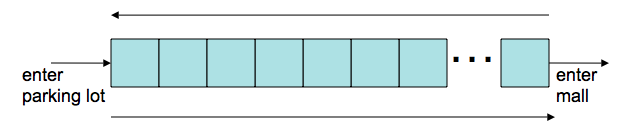
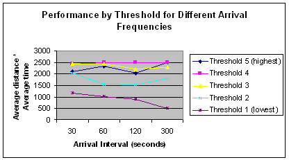

Modeling Drivers entering a parking lot at a mall with the intention to shop
Jolie Martin, Michael Aylward, and Vincent Matossian, July 2007
We propose two models, the first is based on a linear representation of the parking and the second model considers a grid representation.
Goal
- Capture the tradeoffs between optimizing (passing up an empty spot and not finding any closer) vs. satisficing (taking an empty spot even if there may be a better one closer)
- Single row of parking spaces with entrance to parking lot on one end and entrance to mall on the other
Assumptions

- Cars enter parking lot at fixed intervals and positions are updated once per time period (move one car length, take a spot, turn, stay parked)
- All cars want to get as close as possible to the mall entrance and can see one car ahead (will keep going if next spot closer to the mall entrance is available)
- But, if next spot is full, cars have different thresholds for whether to take an empty spot at current position or look for one further ahead, having to loop around if one not found within threshold
- Once parked, total time before departure is modeled as random normal variable (with lower cutoff at zero)
One-Period Performance
Modeled over a single time period, cars that have a lower threshold for willingness to park far away
- Find closer spots
- Take longer to do so
Relative performance of cars with a lower threshold seems to improve as lot gets less “crowded” due to…
- Lower frequency of arrivals
- Greater number of total spots in lot
- Decreases length of average stay at mall
Affect of Arrival Time
For 100 spots, average stay of 1 hour

Adaptive Performance
If cars adopt strategies in subsequent time periods (e.g., days) with probability based on relative performance of strategies in the past, moderately low threshold becomes popular
For 100 spots, average stay of 1 hour

Conclusions
Experimental results
- In a single time period, optimizing (lower threshold for distance) tends to be better relative to satisficing in a less “crowded” parking lot
- Cumulative adaptation based on cumulative performance leads to preference for non-extreme strategy
Caveats
- "Optimal" strategy depends on relative importance of minimizing time and distance
- Model may not extend to 2D (or 3D) layouts
- No consideration of driving congestion
- Other strategies possible (e.g., complete myopia by taking first open spot or greater intelligence by assessing crowdedness, etc)
Other Applications
Any situation where people share the same ordinal preferences, but holding out for a better option may backfire
- e.g., taking a piece of cake before seeing how big the next ones coming will be
- e.g., using a one-item % discount before knowing whether future purchases will be greater cost
Last modified: Thu Jul 12 08:48:26 MDT 2007